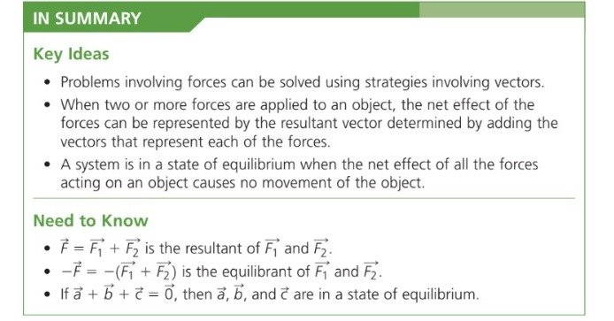
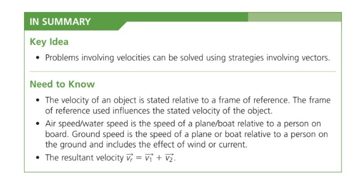

Please review the following Learning Goals of this section and check the Success Criteria you already achieved.
Learning Goals
- Students will be review trigonometric ratios and the Sine and Cosine Laws.
- Students can solve unknowns about acute and right triangles.
- Students will be able to explain what vectors are and give examples of vectors in the real world.
- Students will know how vectors are written algebraically and can use this information to add and subtract vectors.
Success Criteria
I can ...
- Explain the difference between a vector and scalar quantity.
- Identify if vectors are equal or opposites. Add and subtract vectors.